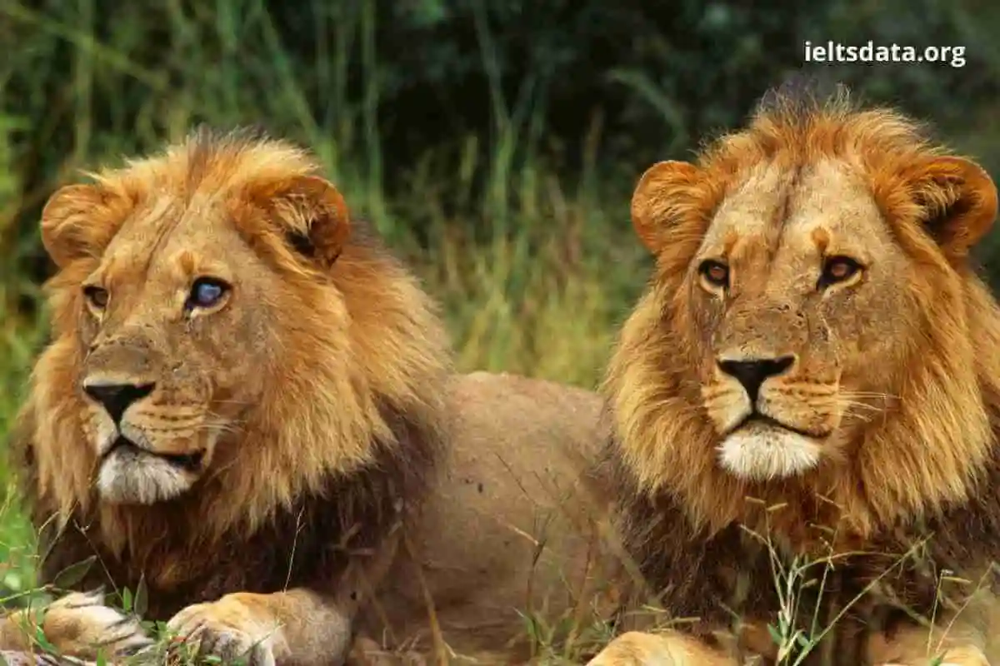
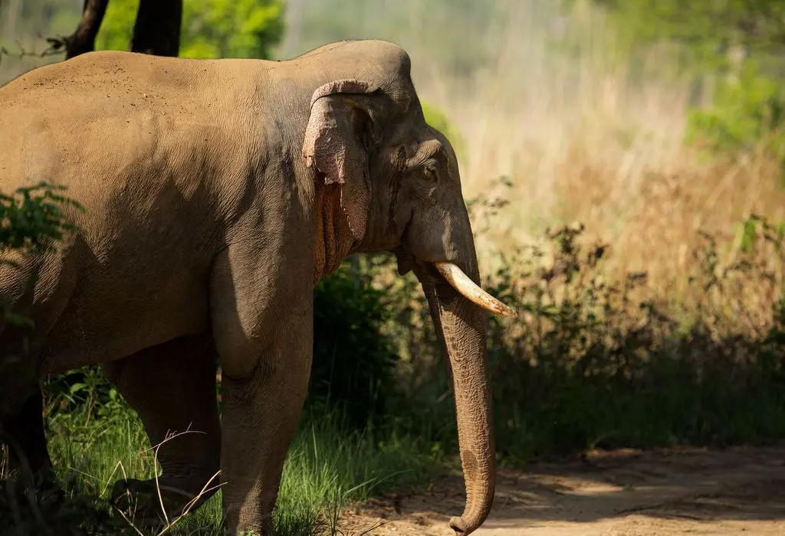
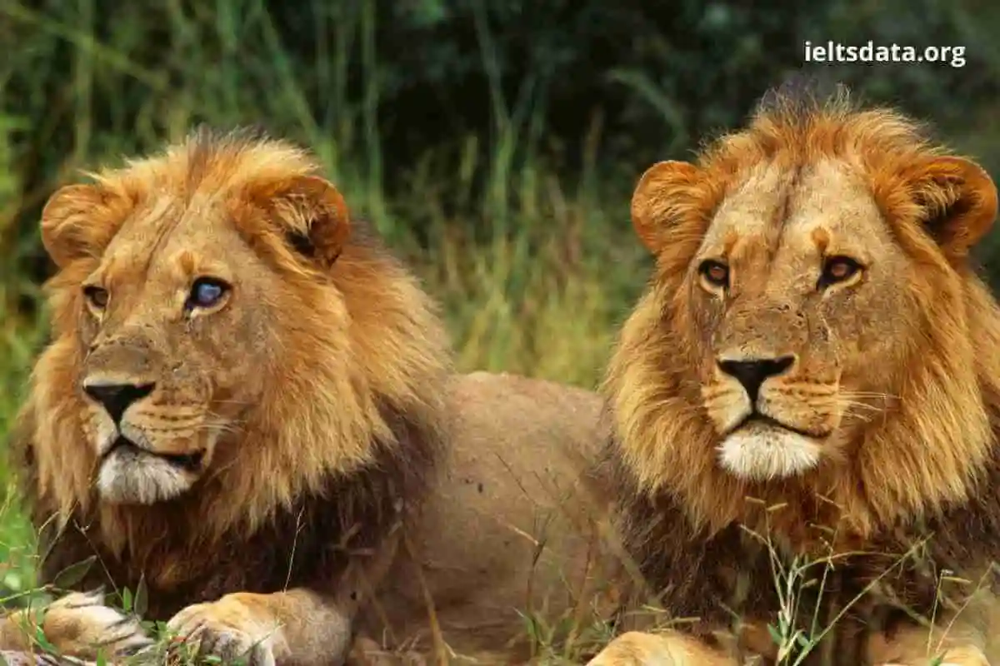
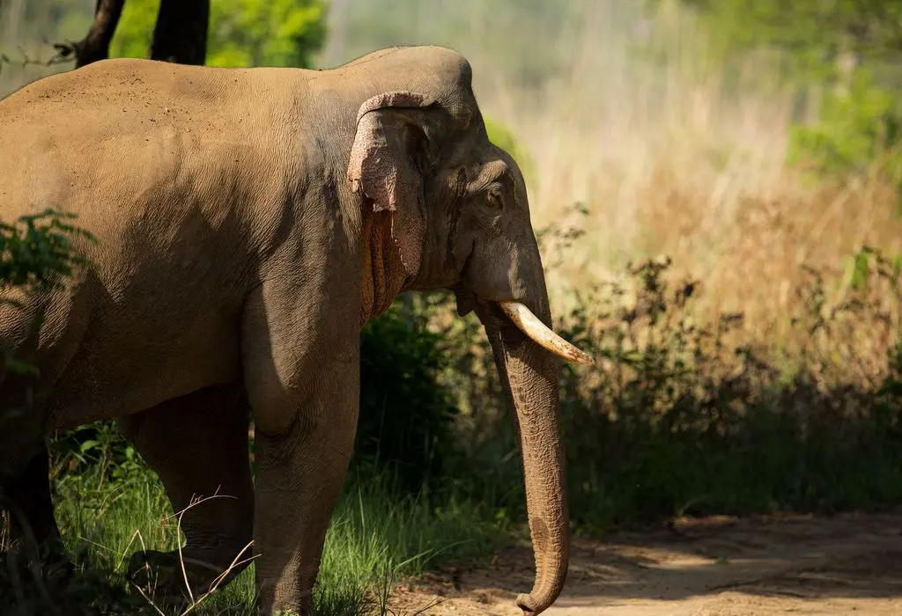
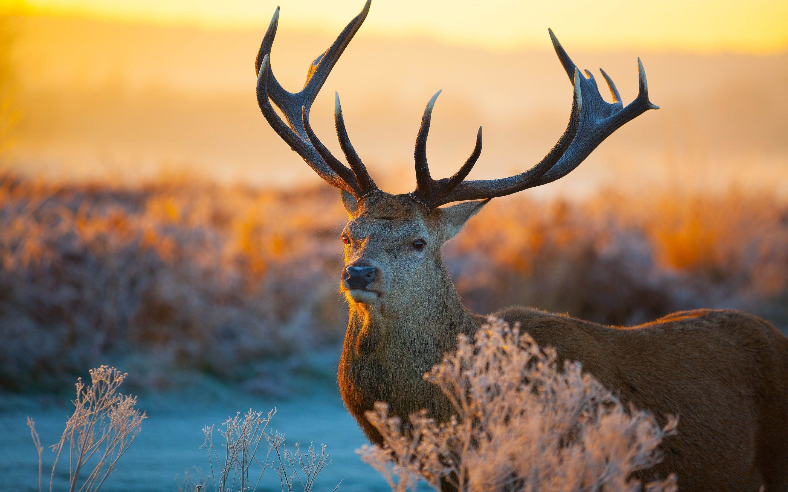
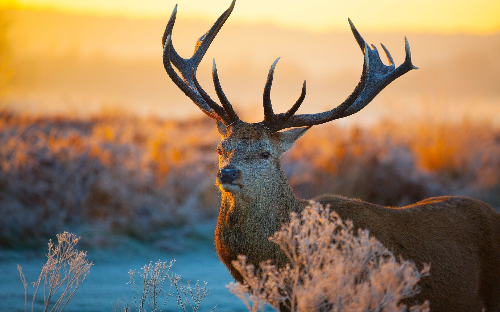
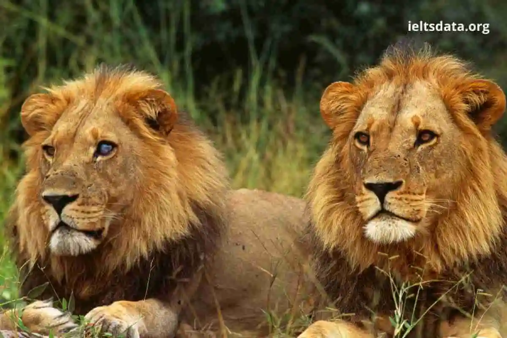
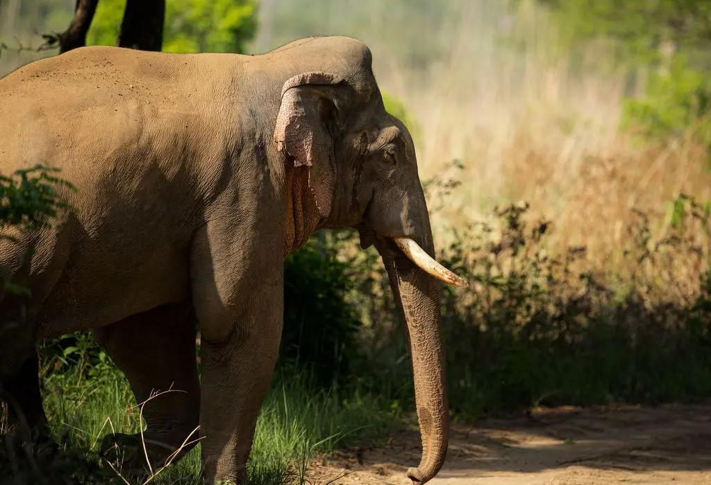
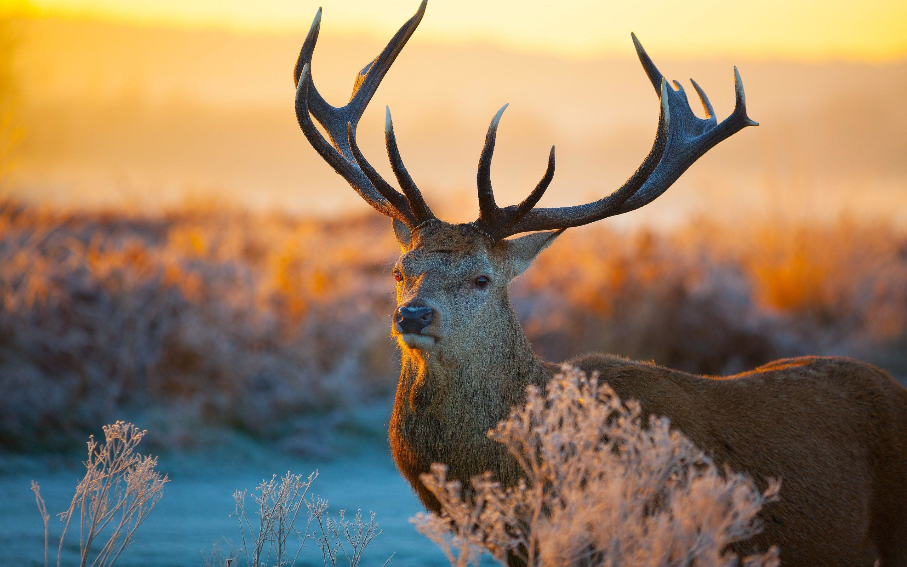

 

Tirthan Wildlife Sanctuary - 202203103510186
SCROLL DOWN TO
VIEW DETAILS
VIEW DETAILS



Tirthan Wildlife Sanctuary is located in Himachal Pradesh, India. It is situated near the banks of the Tirthan river. The sanctuary has densely forested areas and various varieties of fauna living there. Tirthan Wildlife Sanctuary was in the top five Best Managed Protected Areas of India as per the Management Effectiveness Evaluation.
Apart from giving opportunity to watch diverse species of animals and plants, visitors get mesmerized with the views of snow-clad mountains and the greenery around. Orchards of apple and pear are also seen in the surrounding places.
Located at an altitude of 2100 to 4900 m, this wildlife sanctuary has forest type ranging from temperate deciduous to the Alpine ones. The trees common to this region are Oak and Deodar trees.
Varieties of mammals and birds find this sanctuary as their home. The sanctuary was declared as a protected area for preservation of the Himalayan Tahr. The maximum number of Himalayan Tahr is found in this sanctuary.